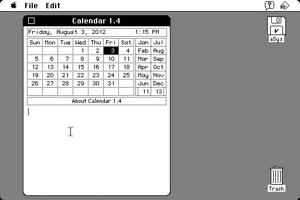

Download
calendar1.4.zip (16K) ResCompare 2.5.3 repackaged into a zipped hfs disk image and checksum file. The disk image can be mounted with Mini vMac.
copyright: David Oster and Mike Schuster
mod date: Nov 5, 1986
license: shareware
A "desk accessory: A Macintosh version of a desktop calendar." I find it useful for answering questions like what is the date of two weeks from now, if it is now near the end of the month. (The down arrow key goes forward one week.)
Daytz is a descendent for OS X, by David Phillip Oster.

If you find these downloads useful, please consider helping the Gryphel Project, which hosts them.
Here are the md5 checksums for the downloads, signed with Gryphel Key 5:
--------- GRY SIGNED TEXT --------- 47fca4adb846a46791fa34d457e387e5 calendar1.4.zip ------- BEGIN GRY SIGNATURE ------- Gry/4Xa8CFcUzxdN/NuqOVTvixDSz9FAWQ4NwEEldaxnMg7SJSOaR4wWnDpBIpmX s94rwJ2T1SDVsjoiQazrc/FEgvfuT7pFD2pvAwBw2TCLwcKVE3iMjQCa2tnITzX+ DvI7l+U2saVZjtbSnJ1+CMkxQytq142SQo3RH/j51RJoKN8V+riNfJ6dWtYR9j6k -------- END GRY SIGNATURE --------